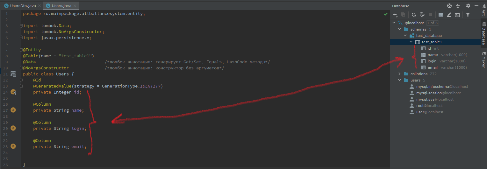
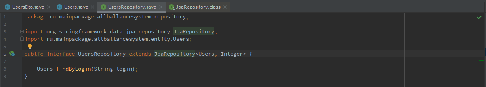

Выполнение проекта на Spring Framework предпологает, что Вами выполнен: JavaEE Authorization Project
Или же Вы не начинающий разработчик.


Выполнение проекта на Spring Framework предпологает, что Вами выполнен: JavaEE Authorization Project
Или же Вы не начинающий разработчик.
main-метод (дает доступ к context)
public static void main ( String[] args ) {
AnnotationConfigApplicationContext context = new AnnotationConfigApplicationContext ( SpringConfig.class ) ;
Первое с чего начинается разработка любого приложения: проектирование структуры базы данных.
@Controller наследуется от @Component + работает с @ComponentScan, который создает бин из помеченного аннотацией @Controller класса.
package com.secondproject.demo.controllers;
import org.springframework.stereotype.Controller;
import org.springframework.web.bind.annotation.GetMapping;
import org.springframework.web.bind.annotation.RequestMapping;
@Controller
@RequestMapping("/first")
public class FirstController {
@GetMapping("/hello")
public String helloPage(){
return "first/hello";
}
@GetMapping("/goodbye")
public String goodByePage(){
return "first/goodbye";
}
}
В пакете создаются такие же поля, что и Вашей БД. например: 
Это JPA репозиторий. Вам требуется настроить конфигурационный файл "application.properties" в котором прописывается маппинг.
test_database - название вашей БД.
Эта строка "useSSL=false&serverTimezone=UTC&useLegacyDatetimeCode=false", нужна если у вас в Intellij IDEA сбиваются настойки Timezone. Если будете писать параметр для Timezone, не забудьте про вопрос "?", стоящий между test_database и параметром.
server.port=8081 - ручная настройка порта.
Теперь создаём интерфейс "UsersRepository" и наследуем его от библиотеки Spring - JPARepository.
Зайдите в JPARepository и посмотрите, какие методы там реализованы. 
Что-то, что стоит разобрать
No news is a good news.